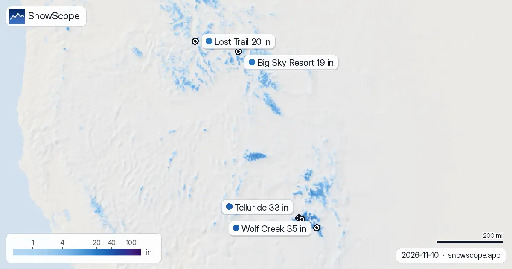

Schweitzer فدجنبر: تلاتة أيام بـ249 $ فوق Sandpoint
Schweitzer هي جبل كبير بقاعدة ديال مدينة صغيرة: Sandpoint وبحيرة Pend Oreille تحت، وسلسلة طويلة ديال التيليفيريك فوق. لرحلة ديال دجنبر، 3-Pack ديالها بـ249 $ لموسم 2026/2027 كيقرب الويكاند فمحطة كبيرة من فلوس محطة صغيرة.
شوف توقعات التلج مباشرة ديال Schweitzer Mountain Resort فالتطبيق ديال SnowScopeالعلو ديال التلج، التنبيهات والخريطة 3D، فابور.من البحيرة للسلسلة
على الخريطة ديالنا Schweitzer عندها 10 تيليفيريكات وحوالي 46 mi (74 km) ديال البيست، من حوالي 4,010 ft (1,221 m) حتى 6,390 ft (1,949 m). هاد الفرق فالعلو كيوضح دجنبر ديالها: القاعدة والقمة كيعيشو فشتوات مختلفة فمعظم الشهر.

3-Pack، بكلام واضح
3-Pack كيعطي تلاتة أيام ديال السكي بـ249 $ وصالح غير لموسم 2026/2027. المحطة نفسها كتحسبها 83 $ فالنهار. مالقيناش ثمن كيشي ليوم كامل على السايت ديالها، لهذا كنقارنو بالباكاج عوض تيكي وحد.
التلاتة أيام كيتوافقو ثاني مع التلج: ماخصكش تخاطر بكلشي على تاريخ وحد ديال دجنبر.

فرق كبير بين التحت والفوق
ف15 دجنبر عادي، القاعدة فيها 22 in (55 cm)، نص الجبل حوالي 5,200 ft (1,585 m) فيه 35 in (90 cm)، والقمة فيها 54 in (138 cm). فنهار عيد الميلاد القمة كتوصل لـ60 in (152 cm) ونص الجبل لـ43 in (109 cm).
الفرص فنص الجبل قوية: 85 % ديال الشتوات كان فيها 20 in (50 cm) أو كثر ف15 دجنبر و98 % حتى 25 دجنبر. نسبة السيمانات ذات التلج الزوين هناك كتزيد من 72 % فأول سيمانة ديال دجنبر لـ98 % فسيمانة عيد الميلاد. التلج اللي كيدوم فالعادة كيوصل لنص الجبل فبداية نوفمبر، أخر من محطات Rockies.
مقارنة مع Lookout Pass و Brundage
Lookout Pass، فالشرق على I-90 فحدود Montana، كتخلص 63 $ وسط السيمانة بالحجز وكان عندها 30 in (75 cm) فنص الجبل ف15 دجنبر عادي. Brundage، بعيد فالجنوب حدا McCall، كتبدا التيكيات الديناميكية من 65 $ فبعض الأيام وكان عندها 30 in (77 cm).
Schweitzer ثمنها فالنهار أكثر من أرخص تيكيات ديالهم، ولكن عندها التلج الأعمق فالقمة من الثلاثة وبزاف أكثر من الأرض.
البارح واليوم، والشتاء اللي فات
نص الجبل كان فيه 41 in (104 cm) ف15 دجنبر عادي فأول 15 شتاء ديال السجل ديالنا، وكل شتاء فات 20 in؛ فآخر 15 شتاء كان 32 in (80 cm) و73 %. الشتاء اللي فات كان ناقص بزاف فهاد التاريخ، بـ6 in (16 cm) فنص الجبل. باكاج ديال تلاتة أيام كيخليك تتسنى الأيام الزوينين.
نصايح للي كيتزلجو
- شري 3-Pack قبل الرحلة ووزع الأيام على النص التاني ديال دجنبر.
- الطريق ديال الجبل من Sandpoint واعرة: دير السلاسل ولا دواليب ديال التلج.
- فبداية دجنبر، طلع للتيليفيريك الفوقاني: القاعدة يمكن تكون رقيقة.
- الضباب والسحاب المنخفض عاديين هنا: نظارات بعدسة للضو الخفيف كيعاونو.
المراجع والمصادر
- Schweitzer, lift ticket 3-Pack 2026/2027 (official) www.schweitzer.com/plan-your-trip/deals-and-packages/lift-ticket-3pack
- Lookout Pass, lift tickets 2026-2027 (official) skilookout.com/lift-tickets/
- Brundage Mountain, daily lift tickets (official) brundage.com/daily-lift-tickets/
- OpenSkiMap (mapped lifts and runs) openskimap.org/
- avalanche.org, US avalanche centers and forecasts avalanche.org/
على هاد الأرقام
أرقام التلج: التاريخ ديال التلج ديال SnowScope، 46 شتوة اللي فاتت (1980-81 حتى ل 2025-26) فالعلوات المكتوبة (التحت، الوسط، الفوق)، إعادة بناء ديال التلج اللي فات لمنطقة مصححة بالعلو (على أساس ERA5-Land؛ Snow_Hydro 1 كم للمغرب)، ماشي البلاغات ديال المحطة. التلج دابا: الخريطة ديال SnowScope. التيليسييجات والبيستات والعلوات: الخرايط ديال OpenSkiMap. الأثمنة: الصفحات الرسمية اللي لتحت، متشافة نهار 13 نونبر 2026؛ الأثمنة الدينامية كتبدل مع التاريخ والطلب.
النشرات الرسمية ديال الانهيارات: avalanche.org (US national portal)
كيفاش تستاشهد بهاد المقال
للبحث، التعليم ولا الصحافة: الأرقام والرسومات تقدر تعاود تخدم بيهم بحرية تحت CC BY 4.0 مع هاد الاستشهاد.
SnowScope (2026), Schweitzer فدجنبر: تلاتة أيام بـ249 $ فوق Sandpoint, https://snowscope.app/blog/ar/2026/11/schweitzer-sandpoint-december-3-pack-deal.html, تشاف ف 2026-11-14
SnowScope (Atlas Labs). (2026, November 14). Schweitzer فدجنبر: تلاتة أيام بـ249 $ فوق Sandpoint. SnowScope snow reports. https://snowscope.app/blog/ar/2026/11/schweitzer-sandpoint-december-3-pack-deal.html
BibTeX
@misc{snowscope2026schweitzersandpointdecem,
author = {{SnowScope (Atlas Labs)}},
title = {Schweitzer فدجنبر: تلاتة أيام بـ249 $ فوق Sandpoint},
year = {2026},
month = nov,
howpublished = {\url{https://snowscope.app/blog/ar/2026/11/schweitzer-sandpoint-december-3-pack-deal.html}},
note = {Published 2026-11-14 20:57 UTC; accessed 2026-11-14}
}· CC BY 4.0 · الطريقة، الداتا والأدوات →
Schweitzer Mountain Resort: التلج والحرارة حسب العلو، هاد الشتا مقارنة مع اللي فاتت (الأدوات) →
تابع Schweitzer Mountain Resort
فابور: ميساج ملي يجي التلج، والتوقعات كل صباح.
تقارير أخرى ديال التلج

16 محطة ديال التزحلق فأمريكا رخاص، مرتبين على حساب فرص التلج ف دجنبر من 46 شتوة اللي فاتو، مع الأثمنة ديال النهار اللي تأكدنا منهم: من 49 $ فوسط السيمانة حتى 125 $ وأكثر.

فين كاين أكثر تلج فغرب ميريكان اليوم؟ إلا بغيتي أكثر تلج فغرب ميريكان اليوم، شوف Wolf Creek (ميريكان): تقريبا 35 إنش (90 سم) فالعلو. من بعدها …

الوصول ل Telluride فالشتا، مطار بمطار: Telluride Regional، Montrose، الطريق 145 مع القانون ديال الجر ديال Colorado، والتيليكابين فابور حتى ل Mountain Village.